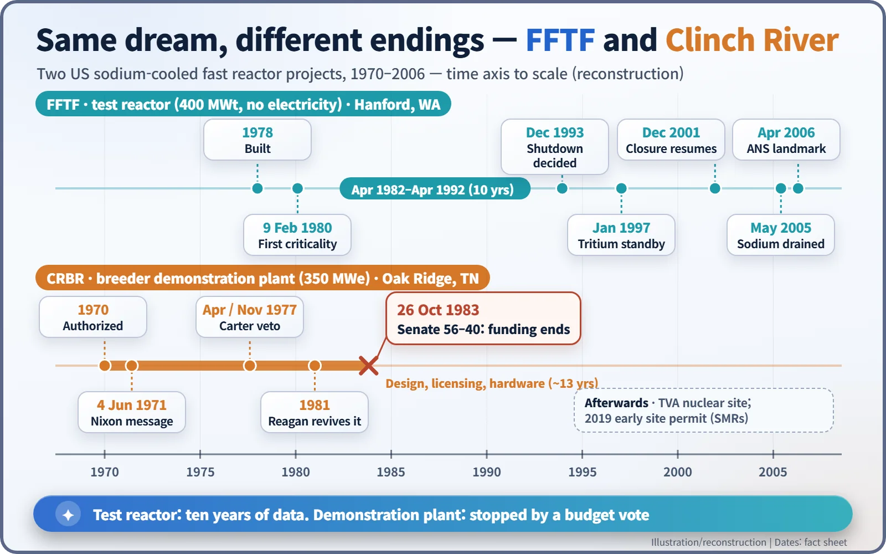
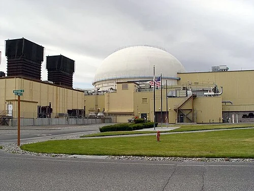
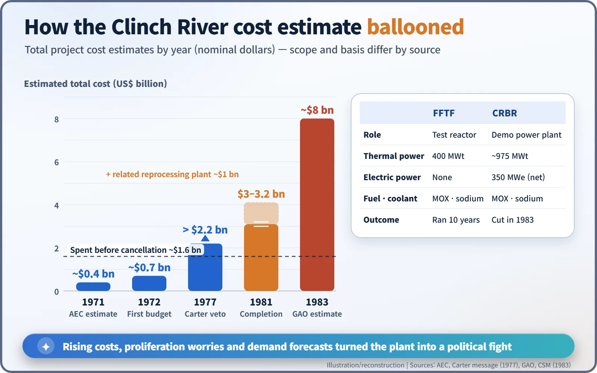
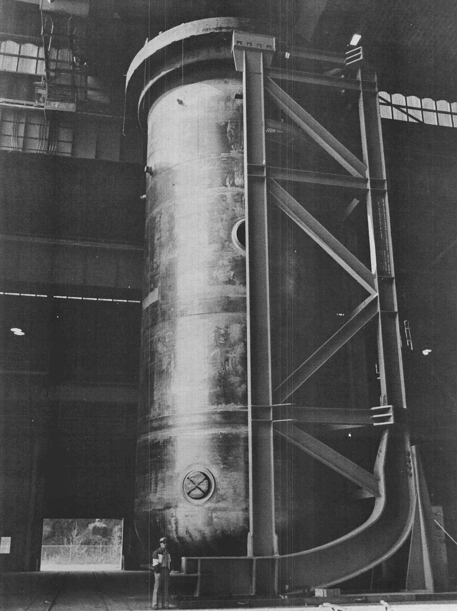

Nuclear History · 218
One Ran for Ten Years, One Never Left the Starting Line — FFTF and the Clinch River Breeder Reactor
A test reactor at Hanford gathered ten years of data, while its sister demonstration plant in Tennessee ran into soaring cost estimates, a presidential veto and a Senate vote.
In the 1970s the United States backed two sodium-cooled fast reactors as steps towards the breeder: the Fast Flux Test Facility (FFTF) at Hanford and the Clinch River Breeder Reactor (CRBR) in Tennessee. FFTF ran for ten years as a national test bed. Clinch River, after its cost estimates soared and two presidents took opposite sides, was stopped by a 56–40 Senate vote on 26 October 1983 before it was ever built.
Lunch bags in the mail
In the autumn of 1983, members of the US Congress began finding something odd in their mail: brown paper lunch bags. Many carried slogans such as "Bag the Breeder" and "No More Pork at the Public Trough". A coalition of citizens' groups had spent six weeks working the phones to get people in key states to send them. The target was the Clinch River Breeder Reactor in Tennessee. [6]
At about the same time, on the other side of the country in the dry scrubland of Washington State, its older sibling, a sodium-cooled test reactor, was quietly running. Both machines grew out of the same dream. Why did they end so differently?
"Our best hope"
On 4 June 1971 President Richard Nixon (1913–1994) sent Congress a special message on energy. "Our best hope today for meeting the Nation's growing demand for economical clean energy lies with the fast breeder reactor," he wrote, adding that the commercial demonstration of a breeder should "be completed by 1980." He asked for an extra $50 million in federal funds for the demonstration plant. [1]
A fast breeder uses fast neutrons to turn uranium-238, which barely burns in ordinary reactors, into plutonium, so that it can make more fuel than it consumes. To keep the neutrons fast, it is cooled not by water (which slows neutrons down) but by liquid sodium. In an era when many people worried that uranium would run short, it looked like the ultimate fuel-saving machine.
The United States pursued the dream in two steps: first a test reactor to put fuels and materials through their paces, then a demonstration plant that would send electricity into the grid. The first was FFTF; the second was Clinch River.

A proving ground in the desert: FFTF
The Fast Flux Test Facility stands in the 400 Area of the Hanford Site in Washington State. It is a 400-megawatt (thermal) sodium-cooled fast reactor, yet it never produced a single watt of electricity. That was not its job. Test fuels and materials were placed in its core and bathed in fast neutrons, so that years of wear could be packed into a much shorter time. Its own fuel was MOX, a mixed oxide of plutonium and uranium. [3]
Construction was finished in 1978, and the reactor first went critical (that is, sustained a chain reaction on its own) on 9 February 1980. After start-up testing, it operated as a national research facility from April 1982 to April 1992, ten years in all. The American Nuclear Society (ANS) credits it with operator radiation exposure about one-hundredth that of commercial power reactors, early passive-safety testing, production of rare isotopes for medicine and industry, and a demonstration that long-lived technetium-99 could be transmuted into a stable element. [3] [8]

A demonstration plant in Tennessee, and a growing bill
The Clinch River Breeder Reactor was first authorised in 1970. It was to be built on land owned by the Tennessee Valley Authority (TVA) beside the Clinch River, inside the Oak Ridge city limits, with a net electrical output of 350 megawatts (about 975 megawatts thermal) and Westinghouse as reactor supplier. [2] [9]
The trouble was the bill. In 1971 the Atomic Energy Commission estimated about $400 million. A year later the figure was nearly $700 million. By 1977 it had passed $2.2 billion, and in 1981 completion was put at $3.0–3.2 billion, plus roughly $1 billion more for a related reprocessing facility. Shortly before cancellation, the General Accounting Office (GAO) put the total at about $8 billion. All are nominal dollars, and each estimate covered a different scope, so direct comparisons have limits. [2] [9]

| FFTF | Clinch River (CRBR) | |
|---|---|---|
| Role | Fuel and materials test reactor | Breeder demonstration power plant |
| Location | Hanford Site, Washington | Oak Ridge, Tennessee |
| Power | 400 MWt, no electricity | About 975 MWt, 350 MWe net |
| Fuel and coolant | MOX, liquid sodium | MOX, liquid sodium |
| Outcome | Operated 1982–1992 | Funding ended 26 October 1983 |
Two presidents and one vote
In April 1977 President Jimmy Carter (1924–2024) announced that commercial breeder construction would be deferred indefinitely. On 5 November 1977 he vetoed an energy authorisation bill (S. 1811) that locked in funding for the plant, calling it "a large and unnecessarily expensive project which, when completed, would be technically obsolete and economically unsound." He also said he was "concerned about the risk of introducing the plutonium economy through an unnecessary commercial demonstration facility." Congress kept the project alive anyway. [2]
After Ronald Reagan (1911–2004) took office in 1981, his administration revived the plant and site work began. Supporters argued for energy security, long-term fuel supply, and the value of an investment already made; their best-known champion was Senate Majority Leader Howard Baker (1925–2014) of Tennessee. Opponents pointed to soaring costs, cheap uranium that undercut the economics, and the risk of spreading plutonium. Unusually, liberals, moderates and conservatives lined up together against what some of them called a "pork barrel" project. [5]
The decision came in the Senate on 26 October 1983. A motion by Senator Gordon Humphrey to table an Appropriations Committee amendment carrying further money for the plant passed 56 to 40. Press reports said the project had been "virtually killed" after 13 years of debate and $1.6 billion in tax dollars. By then more than 70 percent of the equipment had been delivered or ordered, and licensing was nearly complete. [4] [5] [7]

What was left behind
It would be wrong to call the cancellation a technical failure: the reactor was never built, so its performance was never tested. It was a political decision shaped by cost, electricity-demand forecasts and non-proliferation policy, and people on each side still read it differently.
FFTF did not last forever either. In December 1993 the decision was made to shut it down. It was put on standby in January 1997 while tritium production was considered, but closure resumed in December 2001. In May 2005 workers drilled through the core support structure to drain the remaining sodium, ending any realistic chance of a restart, and in April 2006 the ANS named it a National Nuclear Historic Landmark. As for the Clinch River site, in 2019 TVA received an early site permit for small modular reactors there. [3] [8]
One test reactor left ten years of data; one demonstration plant stopped at a budget vote. Together they show that nuclear development is as much about economics and politics as it is about engineering.